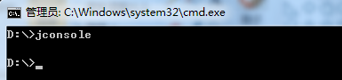
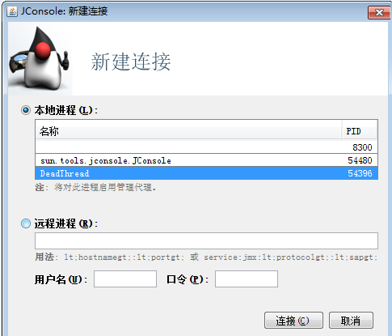
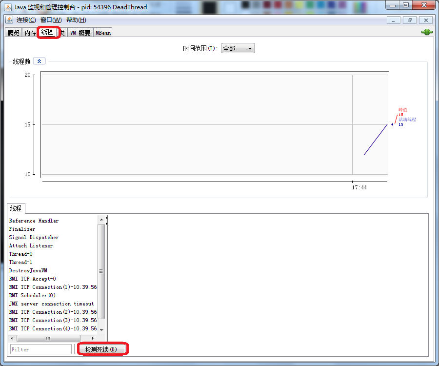
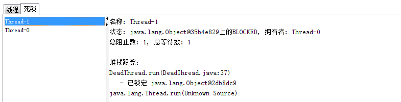
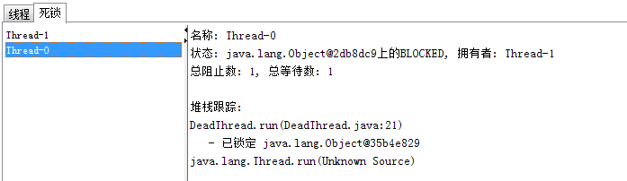
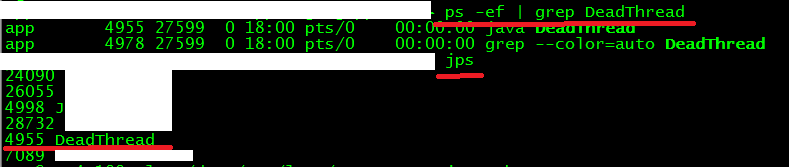
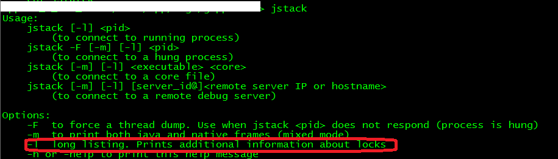
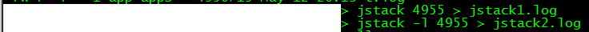
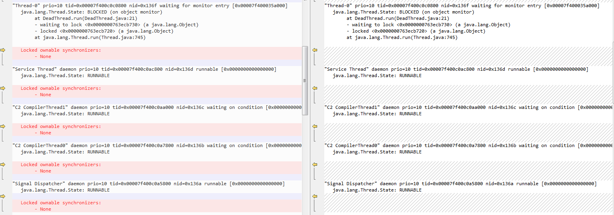
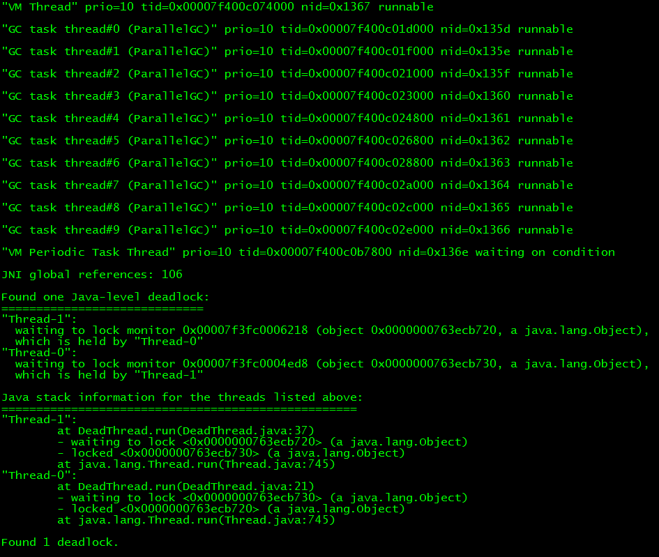

如何查看是否有 Java 线程死锁？下面介绍两种方法。
Jconsole 是 JDK 自带的图形化界面工具，使用 JDK 给我们的的工具 JConsole，可以通过打开 cmd 然后输入 jconsole 打开。

连接到需要查看的进程。

打开线程选项卡，然后点击左下角的“检测死锁” 。

jconsole 就会给我们检测出该线程中造成死锁的线程，点击选中即可查看详情：


从上图中我们可以看出：
在线程 Thread-1 中，从状态可以看出，它想申请 java.lang.Object@35b4e829 这个资源，但是这个资源已经被 Thread-0 拥有了，所以就堵塞了。
在线程 Thread-0 中，从状态可以看出，它想申请 java.lang.Object@2db8dc9 这个资源，但是这个资源已经被 Thread-1 拥有了，所以就堵塞了。
Thread-1 一直等待 java.lang.Object@35b4e829 资源，而 Thread–0 一直等待 java.lang.Object@2db8dc9 资源，于是这两个线程就这么僵持了下去，造成了死锁。
Jstack 是 JDK 自带的命令行工具，主要用于线程 Dump 分析。
1.我们先用 Jps 来查看 java 进程id(或者 Linux 的 ps 命令)

2.看一下 jstack 的使用

3.jstack 输出线程 dump 信息到文件

用比较工程查看带 -l 和不带 -l 的区别如下：

4.查看dump文件，然后进行分析

其中有一行是 at DeadThread.run（DeadThread.java:37），说明 Thread-1 实在 DeadThread 类的 37 行处发生死锁，其中 at DeadThread.run(DeadThread.java:21)，说明 Thread-0 是在 DeadThread 类的 21 行处发生死锁。详细的 jstack dump 文件分析请参看：jstack 和线程 dump 分析 。
从而定位到死锁发生的原因，及具体位置：Thread-0 获得了锁 lock1，接下来期望获得锁 lock2，（第 20 行），但是此时 Thread-1 获得了锁 lock2，接下来期望获得锁 lock2,（第 37 行），因而发生了死锁。
附实例 DeadThread.java 代码：
1 2 3 4 5 6 7 8 9 10 11 12 13 14 15 16 17 18 19 20 21 22 23 24 25 26 27 28 29 30 31 32 33 34 35 36 37 38 39 40 41 42 43 44 45 46 47 48 49 50 51 52 53 54 55 56 57 58 59 60 61 62 63 64 65 66 | public class DeadThread implements Runnable { public String username; public Object lock1 = new Object(); public Object lock2 = new Object(); @Override public void run() { // TODO Auto-generated method stub if (username.equals("a")) { synchronized (lock1) { try { System.out.println("username = " + username); System.out.println(Thread.currentThread().getName()); Thread.sleep(3000); } catch (Exception e) { // TODO: handle exception e.printStackTrace(); } synchronized (lock2) { System.out.println("按lock1->lock2的顺序执行代码"); } } } if (username.equals("b")) { synchronized (lock2) { try { System.out.println("username = " + username); System.out.println(Thread.currentThread().getName()); Thread.sleep(3000); } catch (Exception e) { // TODO: handle exception e.printStackTrace(); } synchronized (lock1) { System.out.println("按lock2->lock1顺序执行代码"); } } } } public void setFlag(String username) { this.username = username; } public static void main(String[] args) { DeadThread dt1 = new DeadThread(); dt1.setFlag("a"); Thread t1 = new Thread(dt1); t1.start(); try { Thread.sleep(2000); } catch (InterruptedException e) { e.printStackTrace(); } dt1.setFlag("b"); Thread t2 = new Thread(dt1); t2.start(); }} |
文章来源：
参考链接：